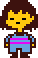
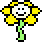
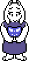
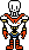
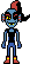
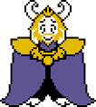
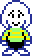

Frisk is a yellow-skinned human child who wears a long-sleeve light blue shirt with two magenta stripes, light blue pants (often depicted as shorts in the official Undertale merch), and red-brown shoes (usually depicted as black or in a darker tone). They have medium-length straight red-brown hair, short and choppy bangs, and a blank expression. Though Frisk does not show much expression in the overworld, NPCs often describe Frisk's expressions.[1] Just like the first human, they have no stated gender[2] and are solely referred to with "they/them" pronouns throughout the game,[3][4] or by generic terms (such as "child", "human", or "kid".)
Frisk's personality is usually ambiguous, allowing the player to project any personality onto Frisk since they're very often speechless to them. However, the narration that describes Frisk's actions occasionally changes depending on their LOVE. Frisk speaks to NPCs throughout the game, especially when ACTing in encounters, but the exact dialogue is shown only when the game gives multiple dialogue options. NPCs' dialogue boxes display "..." to show that the NPC is listening to Frisk,[5] and some NPCs respond to questions that Frisk asks.[6]
Depending on their actions, players can interpret Frisk as merciful and kind, or merciless and violent. Some NPCs emphasize Frisk's kindness, understanding, and grace in the epilogue.[7] Frisk is obedient and only disallows player input when they follow someone else's instructions, such as when Sans tells them to hide behind the conveniently-shaped lamp.
Frisk's determination grants the power to SAVE,[8] heal at SAVE Points, and respawn at SAVE Points after death. This power emerged when Frisk first awoke in the Ruins. Frisk can reload the SAVE file to repeat events that occur after it, but NPCs' memories are not completely erased unless a True Reset occurs or after completing the Genocide Route. After the True Pacifist ending, Flowey's dialogue implies that Frisk is not the being who is manipulating SAVE files.
Frisk is the only character who is ever shown using items or gaining EXP.

Flowey is a sentient golden flower. He has a white center, six yellow petals, and a light-green stem. Flowey can show a variety of expressions and can mimic the faces and voices of other characters. He mimics Toriel and Asgore in some situations, as well as his old self at the end of the Genocide Route. He also mimics the protagonist's face before the Neutral Route's final battle.

Toriel is a Boss Monster whose head resembles a white-furred Nubian Goat, structured with floppy ears and tiny horns. She has a pair of visible fangs and long eyelashes, and her irises have a dark red tint. She has an anthropomorphic body, with paws at the end of her limbs. She wears a long purple robe with white sleeves and the Delta Rune on the chest. Toriel can also be seen with reading glasses, when reading a book on snail facts.
Sans appears as a relatively short and paunchy skeleton, with mitten-like hands. Sans is always seen with a wide, toothy-grin on his face. Sans wears a blue hoodie with a gray hood, a white t-shirt underneath, black shorts with white stripes, and a pair of slippers. He has white dots for pupils in his black eye sockets that disappear when he is serious or angered. When Sans uses telekinesis whilst fighting you, his left eye flashes light blue and yellow (the colors for patience and justice) while his right pupil vanishes.

Papyrus is a tall, perhaps anatomically inaccurate skeleton, with a skull more vertical and geometric than his brother. Being skeletal, many of his expressions incorporate a toothy grin. His eyes resemble vertical slits; his skeletal pseudo-brows form most of his expressions, as well as the corners of his mouth. He has eyeballs which show at times when he is experiencing strong emotions. Papyrus is relatively taller and slightly slimmer than his brother.

Undyne is an anthropomorphic fish monster. She has blue scales and a long red ponytail. She has red and blue fins on the sides of her head, and a pair of sharp, yellow, protruding teeth. She wears a red eyeshadow and has an eyepatch over her left eye. She also wears a black tank top and blue jeans, but debuts in armor varying in light and dark shades of gray. Her eyes have black vertical pupils and yellow sclera. Undyne has no nose.

Alphys is a shy introvert who frequently stutters when she converses. She has low self-esteem, makes self-deprecating comments,[5][6] and devalues her skills at times.[7] True to her role as a scientist, Alphys is intelligent, analytical, and observant. She occasionally theorizes on matters,[8] and can create thorough plans from them. She can create inventions that use metal and magic, such as a "magical spear repair kit."[9] Alphys is adept in programming,[10] robotics, and mechanical engineering.[11] She is agile when she works a project,[12] and has formal writing when documenting her research.

Mettaton originally appears as a gray, largely rectangular box with a 4x5 grid of rectangular lights at the top, similar to the mechanism in Snowdin Forest used for Papyrus's Tile Puzzle. The grid of lights can change colors between red, yellow, green, and blue, and Mettaton uses these color changes in place of facial expressions. He has four dials along the bottom of his body, and the bottom, he has a single leg which ends in a wheel. He has two segmented robotic arms which end in white gloves.

Asgore is a large Boss Monster, and the tallest main character in Undertale. Asgore has two large curved horns, golden-blond mane, golden-blond full beard, white fur, long ears, a snout, and a set of visible fangs. Asgore wears a small, three-pointed crown atop his head, golden pauldrons, a long purple cape that slightly drags along the ground, which he often uses cloak his armored body. Asgore's armor is near-full body, though his feet are unarmored. Distinctly, Asgore's armor has a large chestplate, with a winged crest of the implied "angel" from the Delta Rune emblem, and his tasset visually resembling the triangles of the emblem.

Asriel is a Boss Monster with white fur, long ears, a snout, and a set of visible fangs. In his child form, he lacks horns and has a small tuft of fur atop his head, unlike his parents. He wears a green long-sleeved shirt with yellow stripes and black pants, similar to the first human's clothing.
Chara looks strikingly similar to the protagonist, and has a "similar fashion choice," as said by Asriel Dreemurr.[1] Both appear to have been around the same age when they fell into the Underground. Chara's SOUL is also the same color as the protagonist's, which is indicated by the red SOUL on Chara's coffin, but any other shared traits are unknown.